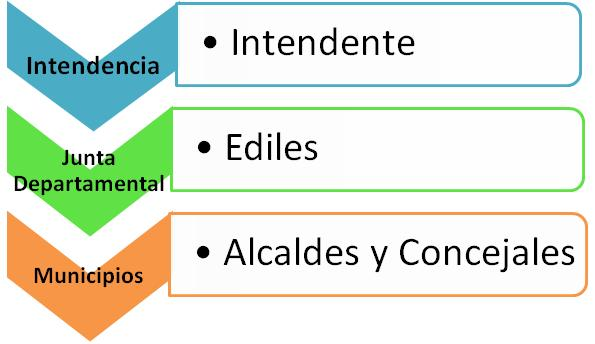

¿Qué son las elecciones departamentales y qué se elige en ellas?
Las elecciones departamentales son instancias de soberanía popular donde se elige a un candidato a Intendente de cada departamento. Este cargo es un órgano unipersonal para el cual se requiere ciudadanía natural en ejercicio, o legal con siete años de ejercicio; tener 30 años de edad mínimo y ser nativo del departamento, o estar radicado en él desde 3 años antes de la fecha de toma de posesión.
También en esta instancia se elige a los 31 miembros de las juntas departamental que serían los Ediles y a las autoridades de las juntas locales, que serían Alcaldes y Concejales. En cuanto a la distribución de los cargos en la Junta Departamental, cada partido político tendrá un número de Ediles en proporción a la cantidad de votos obtenidos en la elección departamental. Por lo menos debe adjudicársele al lema del Intendente 16 cargos.
¿Cada cuánto se realizan y cuál es la duración en el cargo?
Estas elecciones se realizan cada 5 años, teniendo el voto carácter obligatorio. Las nuevas autoridades durarán en el cargo 5 años, hasta que se realicen las nuevas elecciones, el Intendente puede ser reelecto una sola vez, para lo cual deberá renunciar 3 meses antes de la fecha de elecciones.
¿Quiénes pueden sufragar?
Pueden sufragar todos aquellos ciudadanos mayores de 18 años que se hayan inscripto en el Registro Cívico Nacional. Según el Artículo 74 de nuestra Constitución “son ciudadanos naturales todos los hombres y mujeres nacidos en cualquier punto del territorio de la República. Son también ciudadanos naturales los hijos de padre o madre orientales, cualquiera haya sido el lugar de su nacimiento, por el hecho de avecinarse en el país e inscribirse en el Registro Cívico”.